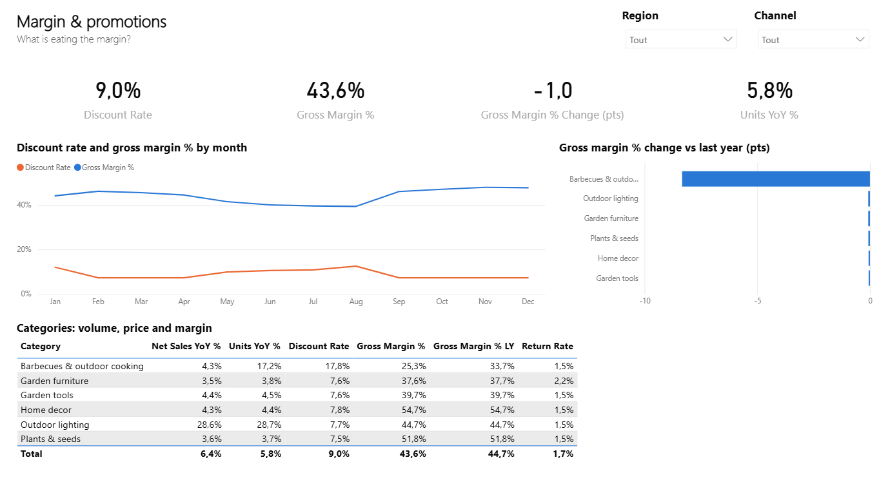
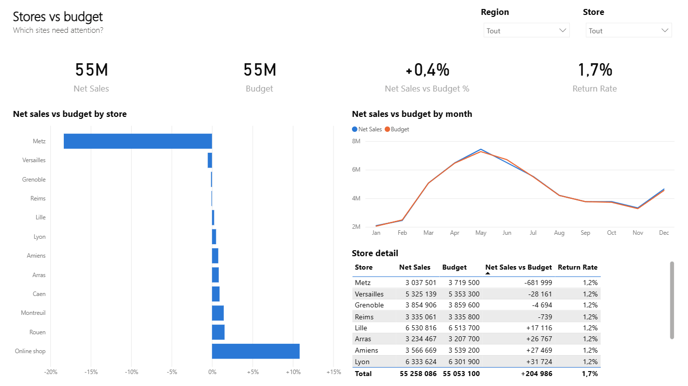

Management reporting: sales are on budget, margin is not
A retail chain's monthly report said "on budget". I built a Power BI reporting dashboard (star schema, 21 DAX measures, three pages) that looks at margin, not just sales, and found €457k of margin missing against budget, where it went, and what to do about it.
A report that says "on budget" and hides a problem
Calyx Home & Garden (fictitious) runs 11 garden centres and an online shop. Every month, the finance team rebuilds a sales report in Excel: one static table per region, sent by email, already out of date when it is read. It tracks sales against budget, and in 2025 sales are on budget. Management is reassured.
The questions that matter are different: are we making the margin we planned? Which stores, categories and decisions explain the gap? Where should we act first? The goal was a self-service dashboard that answers them, with one definition of every KPI.
A star schema and 21 measures, defined once
Two fact tables (daily sales by store and category, monthly budget) share three dimensions. The date table is marked as such, so time intelligence (same period last year) works under any filter. Every KPI is a DAX measure: "gross margin %" means the same thing on every page and for every manager.
fact_sales 52,236 rows
Day × store × category: units, gross sales, discounts, returns, net sales, cost of sales.
fact_budget 864 rows
2025 budget by month, store and category: net sales and gross margin.
dim_date 731 rows
Marked date table: year, quarter, month (sorted by month number).
dim_store 12 rows
11 garden centres in 5 regions and the online shop.
dim_category 6 rows
Furniture, plants, tools, barbecues, decor, outdoor lighting.
21 DAX measures
Sales, margin, discount and return rates, last year, YoY, budget and variances.
Three pages, one question each
Overview: are we on track, and where? Margin & promotions: what is eating the margin? Stores vs budget: which sites need attention? Region, channel and category slicers filter every visual on the page.



The Power BI file is published as a PBIP project: the model is written in TMDL and the report in PBIR, so every measure and visual can be read and reviewed like code. It was tested in the Power BI engine: the model loads the data and every DAX measure returns the same figures as an independent Python calculation.
The dashboard, live in your browser
A web version built from the same data and the same KPI definitions. Use the filters: every figure and chart updates.
Net sales by month
2025 against 2024 and the 2025 budget
Net sales vs budget by store
2025, in % of budget
Margin rate change by category
2025 against 2024, in percentage points
The memo to management
Four findings, each with its amount at stake and a recommendation that can be tracked in the dashboard next month.
Reporting impact: the monthly report becomes a dashboard managers open themselves, with margin next to sales. Had it existed in June, the barbecue promotion's effect on margin would have been visible after the first month instead of at year end.
DAX and Power Query, as code
Because the project is saved as PBIP, the model is plain text that can be versioned and reviewed.
Last year's figures come from SAMEPERIODLASTYEAR on the marked date table, so the comparison follows any filter: a region, a category, a single month.
Net Sales = SUM(fact_sales[net_sales])
Net Sales LY = CALCULATE([Net Sales], SAMEPERIODLASTYEAR(dim_date[date]))
Net Sales YoY % = VAR LastYear = [Net Sales LY]
RETURN DIVIDE([Net Sales] - LastYear, LastYear)
Gross Margin = [Net Sales] - [Cost of Sales]
Gross Margin % = DIVIDE([Gross Margin], [Net Sales])
Gross Margin % LY = CALCULATE([Gross Margin %], SAMEPERIODLASTYEAR(dim_date[date]))
Gross Margin % Change (pts) = ([Gross Margin %] - [Gross Margin % LY]) * 100The budget table is at month grain and joins the date table on the first day of each month, so sales and budget can sit in the same visual at month, quarter or year level.
Budget = SUM(fact_budget[budget_net_sales])
Budget Gross Margin = SUM(fact_budget[budget_gross_margin])
Net Sales vs Budget = [Net Sales] - [Budget]
Net Sales vs Budget % = DIVIDE([Net Sales vs Budget], [Budget])
Gross Margin vs Budget = [Gross Margin] - [Budget Gross Margin]
Discount Rate = DIVIDE([Total Discount], [Gross Sales])
Return Rate = DIVIDE([Total Returns], [Gross Sales] - [Total Discount])An excerpt of the model in TMDL: the CSV folder is a parameter, so the project runs on any machine after changing one value.
table fact_budget
column budget_net_sales
dataType: double
formatString: #,0
summarizeBy: sum
sourceColumn: budget_net_sales
partition fact_budget = m
mode: import
source =
let
Source = Csv.Document(File.Contents(DataFolder & "fact_budget.csv"), [Delimiter = ","]),
Promoted = Table.PromoteHeaders(Source, [PromoteAllScalars = true]),
Typed = Table.TransformColumnTypes(Promoted, {{"month_start", type date},
{"budget_net_sales", type number}, {"budget_gross_margin", type number}}, "en-US")
in
TypedFrom dashboard to routine
Open it in Power BI Desktop
Open powerbi/CalyxReporting.pbip, set the DataFolder parameter to the data folder if needed, then click Refresh.
- GitHubBrowse every file of this project
- powerbi/CalyxReporting.pbipThe Power BI project
- README.mdProject overview
- src/build_pbip.pyWrites and validates the model and report
- src/analyse.pyIndependent check of every KPI in pandas
- src/generate_sales_data.pyThe synthetic retailer
- data/fact_sales.csvDaily sales (3 MB)